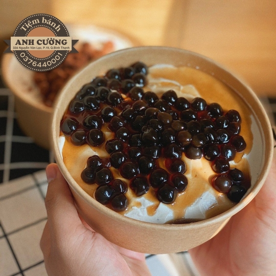
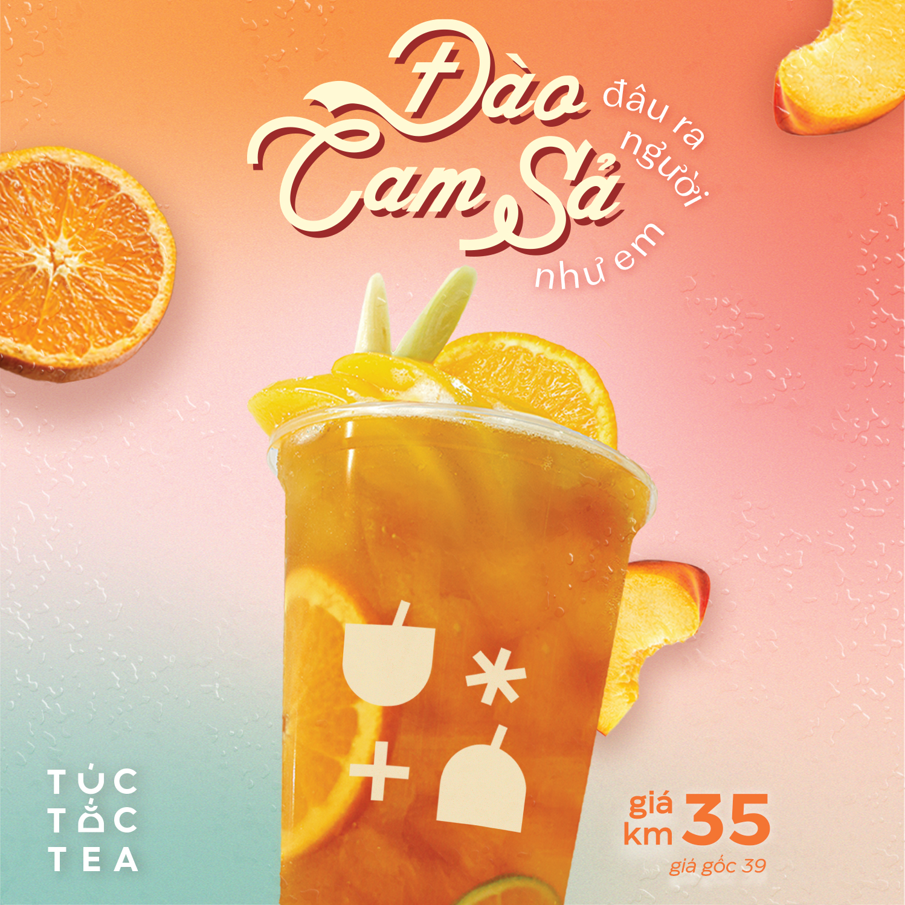

<div style="margin-top: 20px;">
    <div class="container">
        <div class="text-center">
            <h2 class="section-heading text-uppercase">Best Seller</h2>
        </div>
        <ul class="timeline">
            <li><a href="../../assets/img/Banhtrasua.jpg" target="_blank">
                    <div class="timeline-image"></div>
                </a>
                <div class="timeline-panel">
                    <div class="timeline-heading">
                        <h4>Bánh Trà sữa chân trâu đường đen</h4>
                    </div>
                    <div class="timeline-body">
                        <p class="text-muted">Bánh trà sữa trân châu đường đen có cốt bánh mềm mịn hòa quyện cùng lớp
                            kem cheese béo ngậy và đan xen cùng trân châu đường đen dai dai sần sật. Tất cả kết hợp tạo
                            nên hương vị thơm ngon,
                            hấp dẫn và ăn nhiều vẫn không hề bị ngấy.</p>
                    </div>
                </div>
            </li>
            <li class="timeline-inverted">
                <a href="../../assets/img/capuchino.jpg" target="_blank">
                    <div class="timeline-image"></div>
                </a>
                <div class="timeline-panel">
                    <div class="timeline-heading">
                        <h4>Cappuccino</h4>
                    </div>
                    <div class="timeline-body">
                        <p class="text-muted">Cappuccino là tên gọi một loại café của Ý, được tạo nên từ 3 phần đều
                            nhau: Café Espresso pha với lượng nước gấp đôi thông thường (espresso lungo), sữa nóng và
                            sữa sủi bọt. Để hoàn thiện khẩu vị, người ta thường rải lên trên tách cà phê Cappuccino là
                            bột ca cao hay bột quế. Trong các quán cà phê ở Ý, Barista thường dùng khuôn hay dùng thìa
                            và bằng cách khuấy điệu nghệ trong lúc rắc bột để tạo thành các hình nghệ thuật.</p>
                    </div>
                </div>
            </li>
            <li>
                <a href="../../assets/img/tradao.jpg" target="_blank">
                    <div class="timeline-image"></div>
                </a>
                <div class="timeline-panel">
                    <div class="timeline-heading">
                        <h4>Trà đào cam sả</h4>
                    </div>
                    <div class="timeline-body">
                        <p class="text-muted">Trà Đào Cam Sả là thức uống vừa thơm ngon, vừa có thể giải nhiệt và thanh
                            lọc cơ thể, lại tốt cho sức khỏe. Thành phần nguyên liệu: Nước cốt trà đen | Cam vàng | Đào
                            ngâm | Sả tươi | Hạt chia | Nước cốt chanh tươi | Puree đào | Nước đường | Đá viên.</p>
                    </div>
                </div>
            </li>
            <li class="timeline-inverted">
                <a href="../../assets/img/matcha latte.webp" target="_blank">
                    <div class="timeline-image"></div>
                </a>
                <div class="timeline-panel">
                    <div class="timeline-heading">
                        <h4>Matcha Latte</h4>
                    </div>
                    <div class="timeline-body">
                        <p class="text-muted">Matcha latte là một trong những biến thể của latte, được dùng thay bột trà
                            xanh. Matcha latte là thức uống kết hợp văn hóa giữa Đông Tây, tạo nên sự cộng hưởng tuyệt
                            vời trong hương lẫn vị.

                            Thức uống có vị thơm đặc trưng từ bột trà xanh (thường là của Nhật Bản và Đài Loan), hòa
                            quyện với vị sữa béo. Trong đó có một phần sữa nóng được đánh bọt dùng để vẽ nên những hình
                            ảnh sinh động, đẹp mắt trên bề mặt ly thức uống. Latte thường được phục vụ trong các quán cà
                            phê với cả hai hình thức nóng và lạnh đều rất ngon, nhưng mỗi loại sẽ cho bạn một trải
                            nghiệm khác nha</p>
                    </div>
                </div>
            </li>
            <li class="timeline-inverted">
                <div class="timeline-image">
                    <h4>
                        Be Part
                        <br />
                        Of Our
                        <br />
                        Cafe!
                    </h4>
                </div>
            </li>
        </ul>
    </div>
</div>